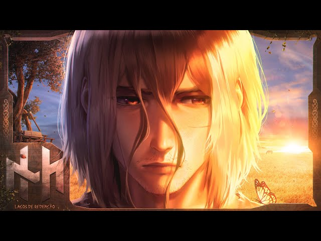
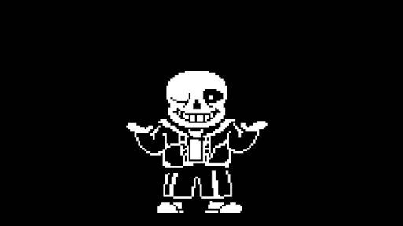
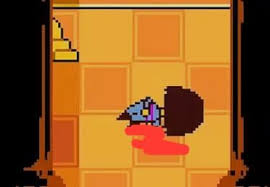
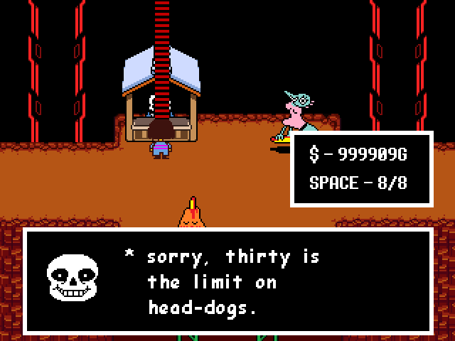

ocê é Frisk, uma criança que tropeçou e caiu no Monte Ebott, chegando ao mundo dos monstros. Um monstro amigável, mas atormentado, te guia, e pergunta sobre sua jornada: "Humano... Qual caminho você escolherá para sair daqui?"

você encontrou um mostro "frog"

você mata frog, a poeira de sua alma se esvai pelo ar

frog agradece pela misericordia, e cameça a cantar RAP "laços de rendeção"
Não estou só, não Papai você sempre foi Meu farol E eu posso, sim Viver pois você morreu por mim E agora, enfim Você vive Vive em mim"

você encontra sans "hehehehehe"

sans mata você"

vocês comem um dogão"